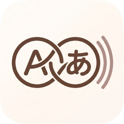

Supported environment
Echoknot is delivered as an iOS app. Device and OS availability follows the active App Store distribution configuration for the current release. Core learning flows work without an account.

Echoknot for iOSThis page documents the v1.3 release-candidate behavior: local-first storage, AI-triggered features and limits, optional Premium backup, troubleshooting, privacy handling, and the terms that govern normal use. Public App Store availability can lag until Apple review completes.
Echoknot is delivered as an iOS app. Device and OS availability follows the active App Store distribution configuration for the current release. Core learning flows work without an account.
Core data operations are local. AI-assisted actions require network access only when you explicitly trigger them. Optional cloud backup also requires network access, an active Premium entitlement, and Sign in with Apple.
| Module | Availability | Implementation Notes |
|---|---|---|
| Knot capture and edit | Available | Word, translation, usage, anchor, tags; edit and delete in knot details. |
| AI auto-fill and detail refresh | Available | User-triggered only. Successful requests consume the daily auto-fill quota. |
| Echo story generation | Available | Requires minimum 3 and maximum 8 selected knots from one language. |
| Daily AI usage limits | Available | Free: 30 auto-fills/day and 10 echo generations/day. Premium: 200 auto-fills/day and 30 echo generations/day. Counters reset on the device's local calendar day. |
| Appearance, language, and text size | Available | Theme supports Light, Dark, and System. App UI supports English, Simplified Chinese, and Traditional Chinese. |
| Favorites and recents | Available | Favorites are capped at 5, and recent echoes are normalized to the latest 5. |
| Data export | Available | JSON and PDF export options available from Settings and Dashboard. |
| Premium entitlement | Available | Premium can be unlocked through an App Store subscription or an eligible App Store subscription Offer Code. |
| Optional cloud backup and sync | Available | Requires active Premium entitlement plus Sign in with Apple. Local-only usage remains fully supported without it. |
Open a knot from the dashboard list, then use the edit action in knot details. Delete is available in knot details as a destructive action.
Echo generation is disabled when fewer than 3 knots are selected, when selected knots use mixed languages, when your daily Echo limit is reached, when provider quota is exhausted, or when network/provider access fails.
In v1.3, the free tier allows 30 AI auto-fills/detail refreshes and 10 Echo generations per local day. Premium raises this to 200 auto-fills/detail refreshes and 30 Echo generations per local day.
Daily AI counters reset on the device's local calendar day. The app refreshes quota state on launch, when it becomes active again, and when iOS reports a day or significant time change.
You can favorite saved echoes. Favorites are capped at 5. Unfavorite an item to free space.
Use Settings data export buttons, or open the Dashboard export menu in the all-knots area. Both JSON and PDF formats are supported.
Reset deletes knots, recent echoes, favorite echoes, and preferences, then restores defaults.
Recent preview is a dashboard layout preference for the recent-knots section. It does not unlock Premium and it does not change AI quota behavior.
In Settings, open Appearance to set theme (Light, Dark, System), app language, and text size. When System is selected, the app follows the device appearance.
No. Core knot capture, review, echo generation, and export work without an account. Premium adds higher AI quota plus an optional backup and sync path.
Premium unlocks higher daily AI quota and optional cloud backup/sync. After Premium is active, you can choose to Sign in with Apple for sync. Eligible App Store subscription Offer Codes unlock the same Premium entitlement for the offer duration.
Only the text required for the user-triggered action is sent to the Echoknot AI backend over HTTPS. The backend uses Alibaba Cloud DashScope/Qwen and keeps provider API keys out of the iOS app bundle.
Echoknot v1.3 is local-first by default. TangSpark does not run a general-purpose advertising profile, and core app use does not require you to create an account.
Under GDPR and UK GDPR, users generally have rights such as access, correction, deletion, restriction, portability, objection, and complaint rights. Because normal use is local-first, many controls can be exercised directly through edit, export, reset, or by disabling optional cloud backup features.
US state privacy laws (including California) may grant rights to know, correct, delete, and opt out of sale/share of personal information. Echoknot is not designed to sell personal information or share app content for targeted advertising in normal app usage.
Echoknot is a language-learning product. Do not store highly sensitive personal information, payment details, health records, or secrets in knot content. AI features are not intended for regulated or high-risk use cases.
Contact support@tang-spark.no and include your region (EU/EEA/UK or US), device model, iOS version, and app version.
Echoknot is a language-learning app for capturing vocabulary, generating optional AI-assisted content, and managing local or optionally backed-up study data. TangSpark may update, improve, pause, or remove features over time.
AI output may be incomplete, biased, or incorrect. You are responsible for reviewing generated translations, example sentences, grammar notes, and echo stories before relying on them.
Premium unlocks higher daily AI quota plus optional cloud backup and sync. Core local learning flows are not gated behind Premium. App Store subscriptions, renewals, billing, and Offer Code handling are governed by Apple’s platform terms.
You remain responsible for the content you enter into the app and for maintaining any backup strategy you require. Export tools and optional cloud backup are convenience features, not an absolute guarantee against every loss scenario.
Echoknot is provided on an “as available” basis to the maximum extent permitted by applicable law. TangSpark does not promise uninterrupted availability, perfect AI output, or loss-free operation in every device or network condition.
TangSpark may revise these terms as the product evolves. Continued use after a published update means you accept the revised terms. Questions can be sent to support@tang-spark.no.
Echoknot's core experience remains fully usable without login, with daily AI limits on the free tier to keep the service sustainable.
Support email: support@tang-spark.no
For faster triage, include the template below.
Subject: Echoknot bug report Device: [e.g., iPhone 14] iOS version: [e.g., iOS 18.3] App version: [1.3 build 17, or App Store version shown on your device] What happened: [Describe the issue] Expected behavior: [What you expected] Steps to reproduce: 1. 2. 3. Screenshots/screen recording: [Attached / Not attached]